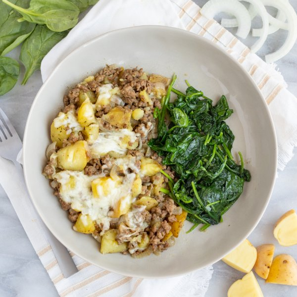

Cheesy "French Onion" Beef & Potato Skillet with Sautéed Spinach

Total Time
40 min
Nutrition (per serving)
690.7 kcalCalories
44.6 gProtein
37.5 gCarbs
40.5 gFat
Full nutrition table
| Calories | 690.7 kcal |
| Total fat | 40.5 g |
| Saturated fat | 18.6 g |
| Trans fat | 1.9 g |
| Cholesterol | 158.7 mg |
| Sodium | 449.4 mg |
| Carbohydrates | 37.5 g |
| Fiber | 6.8 g |
| Sugars | 5.6 g |
| Protein | 44.6 g |
| Potassium | 1789.2 mg |
| Calcium | 282 mg |
| Iron | 7.4 mg |
| Vitamin A | 242.9 IU |
| Vitamin C | 40.8 mg |
| Vitamin D | 15.4 IU |
Cookware
Ingredients
- 2 (5 oz) pkgsbaby spinach
- 6 fl ozchicken or vegetable broth
- 2 clovesgarlic
- 1 ½ lblean ground beef
- ½ (8 oz) blockmozzarella cheese
- 1 ½ lbnew potatoes
- 2 mediumyellow onions
- black pepper
- butter, unsalted
- salt
- thyme, dried
- Worcestershire sauce
Steps
- Preheat oven to 450°F.
- Wash, dry, and quarter potatoes; place in a large pot, along with salt, and cover with hot water (from the tap). Bring to a boil, reduce heat to low, and simmer until fork-tender, about 10 minutes.1 ½ lb new potatoes
1 tsp salt - Meanwhile, peel, halve, and slice onions crosswise into thin half-moons. Peel and mince garlic.2 medium yellow onions
2 cloves garlic - Preheat a large ovenproof skillet over medium heat.
- Once the skillet is hot, add butter and swirl to coat the bottom. Add onion and garlic to the skillet; cook, stirring occasionally, until starting to soften, 3-4 minutes.4 tsp butter, unsalted
- Add beef and spices to the skillet. Cook, breaking the meat apart with a spoon, until browned and crumbly 4-5 minutes. Remove from heat.1 ½ lb lean ground beef
1 tsp thyme, dried
1 tsp salt
¼ tsp black pepper - While the beef is cooking, coarsely grate mozzarella.½ (8 oz) block mozzarella cheese
- When the potatoes are done, drain and add to the skillet with the beef and onions. Gently crush some of the potatoes using a fork or potato masher. Add broth and Worcestershire to the skillet and stir to combine. (Reserve pot for later use.)6 fl oz (¾ cup) chicken or vegetable broth
4 tsp Worcestershire sauce - Sprinkle mozzarella over the beef and potatoes. Place skillet in the oven and bake until the mozzarella is melted and golden, 7-8 minutes. Remove from oven.
- Meanwhile, wash and dry the spinach. (Skip this step if it came pre-washed.)2 (5 oz) pkgs baby spinach
- Return the pot to medium heat.
- Once the pot is hot, add additional butter and swirl to coat the bottom. Add spinach to the pot in handfuls, waiting for the spinach to wilt slightly before adding the next handful. Season with salt and pepper, stir to combine, and remove from heat.4 tsp butter, unsalted
¼ tsp salt
⅛ tsp black pepper - To serve, divide beef-potato skillet and spinach between plates. Enjoy!